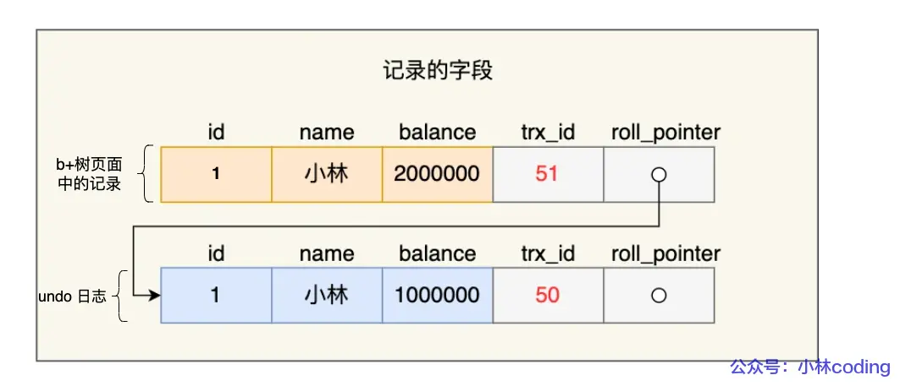
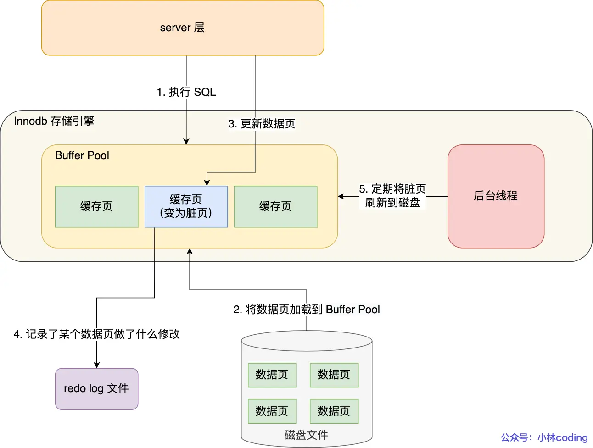
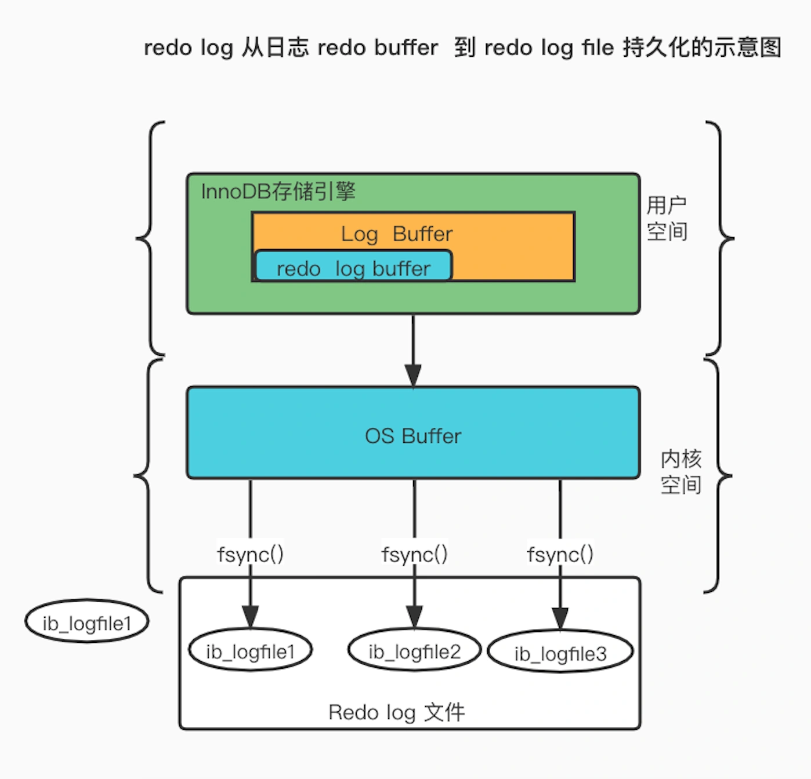

数据库（六）故障恢复
数据库运行期间会发生哪些故障（问题）
事务故障
事务故障指事务未运行到既定的终点（没有commit或显式的rollback），例如对于支付系统若付款失败则需要回滚支付的操作，确保事务的一致性
系统故障
系统故障指需要即时重启系统而造成的数据库故障，现象是修改内存中的修改未写到磁盘，写入磁盘的数据未必是完成的事务
介质故障
介质故障指磁盘损坏造成的故障，需要全量迁移数据库数据
MySQL日志（解决方案）
undo log
概念
undo log 是一种用于撤销回退的日志。在事务没提交之前，MySQL 会先记录更新前的数据到 undo log 日志文件里面，当事务回滚时，可以利用 undo log 来进行回滚。其记录的是修改前的值
作用
undo log确保事务的一致性，用以解决事务故障与系统故障
记录时机与内容
每当 InnoDB 引擎对一条记录进行操作（修改、删除、新增）时，要把回滚时需要的信息都记录到 undo log 里，比如：
- 在插入一条记录时，要把这条记录的主键值记下来，这样之后回滚时只需要把这个主键值对应的记录删掉就好了；
- 在删除一条记录时，要把这条记录中的内容都记下来，这样之后回滚时再把由这些内容组成的记录插入到表中就好了；
- 在更新一条记录时，要把被更新的列的旧值记下来，这样之后回滚时再把这些列更新为旧值就好了。
一条记录的每一次更新操作产生的 undo log 格式都有一个 roll_pointer 指针和一个 trx_id 事务id：
- 通过 trx_id 可以知道该记录是被哪个事务修改的；
- 通过 roll_pointer 指针可以将这些 undo log 串成一个链表，这个链表就被称为版本链；
（注：MySQL每个数据行都有一个隐藏的trx_id项，用以记录最新修改该行数据的事务id，undo log就是通过数据行获取trx_id的）
版本链如下图：
《img》

缓存机制
undo log 会先写入 Buffer Pool 中的 Undo 页面，之后再找合适的时机刷盘
MVCC（多版本并发控制）
【该部分内容详见数据库事务】
undo log 还有一个作用，通过 ReadView + undo log 实现 MVCC（多版本并发控制）。
对于「读提交」和「可重复读」隔离级别的事务来说，它们的快照读（普通 select 语句）是通过 Read View + undo log 来实现的，它们的区别在于创建 Read View 的时机不同：
- 「读提交」隔离级别是在每个 select 都会生成一个新的 Read View，也意味着，事务期间的多次读取同一条数据，前后两次读的数据可能会出现不一致，因为可能这期间另外一个事务修改了该记录，并提交了事务。
- 「可重复读」隔离级别是启动事务时生成一个 Read View，然后整个事务期间都在用这个 Read View，这样就保证了在事务期间读到的数据都是事务启动前的记录。
redo log
概念
redo log 记录的是数据修改后的值，用以在事务提交但数据未刷盘时对于已提交事务的重做。另外对于undo log的持久化也是通过redo log做的
作用
redo log确保事务的持久性，用以解决系统故障
记录时机与内容
在事务提交时，只要先将 redo log 持久化到磁盘即可，可以不需要等到将缓存在 Buffer Pool 里的脏页数据持久化到磁盘

缓存机制
redo log 也有自己的缓存—— redo log buffer，每当产生一条 redo log 时，会先写入到 redo log buffer。
redo log buffer 默认大小 16 MB，可以通过 innodb_log_Buffer_size 参数动态的调整大小，增大它的大小可以让 MySQL 处理「大事务」是不必写入磁盘，进而提升写 IO 性能。

bin log
概念
Binlog是 MySQL Server 层的日志，它记录了 所有涉及数据库修改的语句（DML 和 DDL），但不记录 SELECT 查询
作用
bin log确保事务的一致性和持久性，用以解决介质故障，主从复制，增量备份与恢复，数据审计
系统故障恢复方法
基本恢复方法
正向扫描日志，Undo 故障发生时未完成的事务，Redo 已完成的事务
系统在重新启动时自动完成，不需要用户干预
存在问题：搜索整个日志将耗费大量的时间；REDO 重新执行浪费了大量时间，所以引入检查点技术
检查点技术
在日志文件中增加检查点记录（checkpoint）
- 检查点记录的内容
- 建立检查点时刻所有正在执行的事务清单 这些事务最近一个日志记录的地址
增加重新开始文件
- 记录各个检查点记录在日志文件中的地址
注：当事务 T 在一个检查点之前提交且T 对数据库所做的修改已写入磁盘。那么在进行恢复处理时，没有必要对事务 T 执行 REDO 操作
利用检查点的恢复步骤
-
从重新开始文件中找到最后一个检查点记录在日志文件中的地址，由该地址在日志文件中找到最后一个检查点记录
-
由该检查点记录得到检查点建立时刻所有正在 执行的事务清单 ACTIVE-LIST 建立两个事务队列：UNDO-LIST、REDO-LIST 把 ACTIVE-LIST 暂时放入 UNDO-LIST 队列，REDO-LIST 队列暂为空
-
从检查点开始正向扫描日志文件，直到日志文件结束 有新开始的事务 Ti，把 Ti 暂时放入 UNDO-LIST 队列
如有提交的事务 Tj，把 Tj 从 UNDO-LIST 队列移到 REDO-LIST 队列
-
对 UNDO-LIST 中的每个事务执行 UNDO 操作, 对 REDO-LIST 中的每个事务执行 REDO 操作